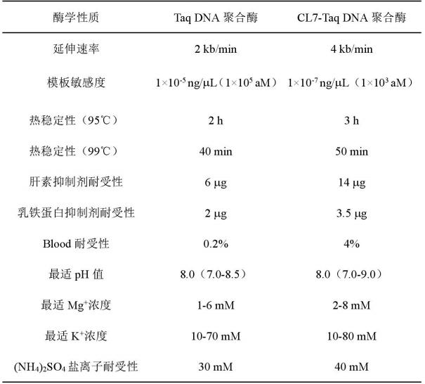

据上述实验与结论分析可得出，CL7-Taq DNA聚合酶的融合表达改善了酶的酶学性质，主要表现在热稳定性、延伸速率、模板敏感性以及对抑制剂的耐受性等方面：
1)CL7-Taq DNA聚合酶的热稳定性明显优于Taq DNA聚合酶；
2)CL7-Taq DNA聚 合酶的延伸速率是Taq DNA聚合酶的两倍，可达到4kb/min；
3)CL7-Taq DNA 聚合酶对模板的敏感度比Taq DNA聚合酶高一百倍；
4)CL7-Taq DNA聚合酶对 盐离子的耐受性更好，对PCR抑制剂的耐受性也有显著的提高。
因此，CL7与Taq DNA聚合酶融合不仅增强了延伸速率、节省了时间，而且大 大地提高了 Taq DNA聚合酶对模板的敏感度，同时与普通的Taq DNA聚合酶相 比，重组CL7-TaqDNA聚合酶对PCR抑制剂（血液，乳铁蛋白，肝素）表现出更 高的耐受性，使其能够扩增含有抑制剂的微量模板。此外，由于CL7-Taq DNA 聚合酶对血液样品的耐受性以及模板敏感度显著增强，无需预处理抽提DNA,为聚合酶开辟了新的应用方向，同时也为体外诊断提供了有价值的工具酶。因此，CL7-TaqDNA聚合酶在PCR检 测疾病诊断与治疗、传染病检测、司法鉴定等临床诊断领域，以及原位PCR、基因分型、定点诱变、DNA测序等分子生物学和基因工程领域中具有广阔的应用前景。
附：Taq DNA聚合酶与CL7-Taq DNA聚合酶的酶学性质比较
